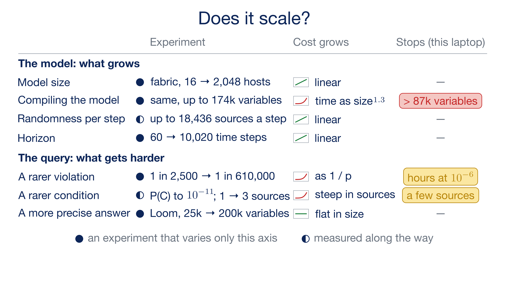

← Back · Extra · The Case for Automated Probabilistic Reasoning for Network Performance Analysis (HotNets ’26)
Does it scale?
Scaling has many dimensions: a model can grow in size, in randomness per time step and in time; a query can ask for a rarer violation, a rarer condition or a more precise answer. We ran experiments to test each axis independently.

The extra, interactive
loading…
paused
space play/pause · →/← step · PgDn/PgUp caption · R reverse · [/] speed · C captions · F full screen · Home/End · drag the bar to scrub